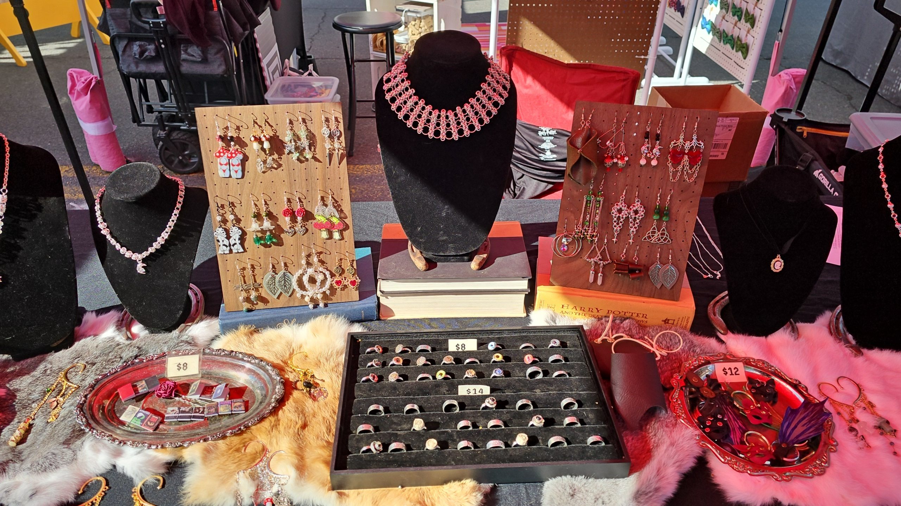
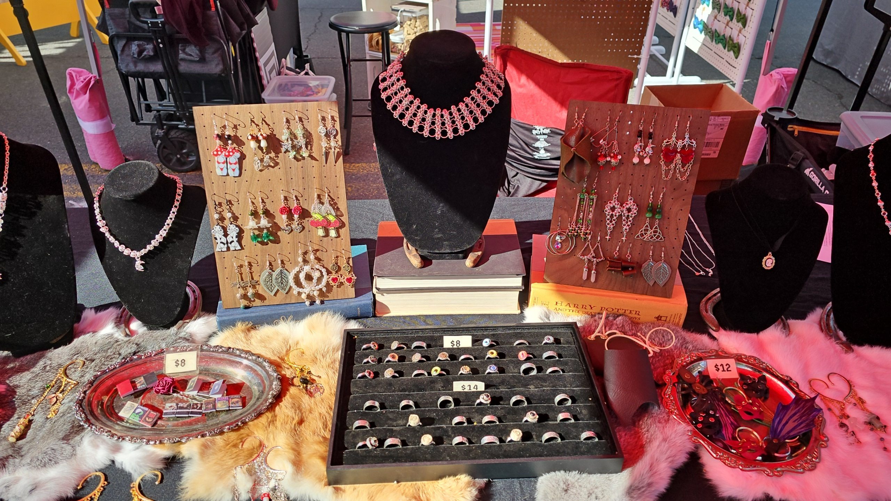

Huginn's Hoard Jewelry
About Us
Nestled amidst the vibrant hustle of Montana's Renaissance fairs and craft markets,
Huginn's Hoard Jewelry beckons with its unique blend of craftsmanship and creativity.
This small, artisanal business specializes in handmade jewelry, leatherwork, and intricately woven chainmaille,
offering a treasure trove of bespoke creations. Step into Huginn's Hoard's booth and discover
a world where each piece tells a story of meticulous artistry and passion for the craft. Handcrafted
jewelry glistens with semi-precious stones and intricate metalwork, reflecting both medieval elegance and modern allure.
Bracelets, necklaces, and earrings are adorned with Celtic knots, Norse runes, and other motifs that echo
ancient traditions with a contemporary twist.
Leatherwork at Huginn's Hoard is a testament to rugged durability and timeless style. From supple belts
and wrist cuffs to intricately tooled pouches and bags, each piece is crafted with care, promising both
functionality and aesthetic appeal. The scent of rich leather mingles with the faint tang of metal as
visitors peruse the finely wrought chainmaille pieces. These intricate weaves of metal rings form stunning
adornments such as bracelets and pendants, showcasing the skill and dedication of the artisans.
As an in-person seller exclusively, Huginn's Hoard Jewelry thrives on the direct connection with its customers.
The ambiance of Renaissance fairs and the buzz of craft shows provide the perfect backdrop for enthusiasts to
engage with the artists, delve into the stories behind each creation, and even commission bespoke pieces tailored
to their preferences.
For those seeking unique accessories that transcend the ordinary, Huginn's Hoard Jewelry offers a captivating blend
of old-world craftsmanship and contemporary flair. Whether you're drawn by the allure of handcrafted jewelry, the rugged
charm of leatherwork, or the intricate beauty of chainmaille, a visit to Huginn's Hoard promises an experience where
creativity and tradition converge into wearable art.